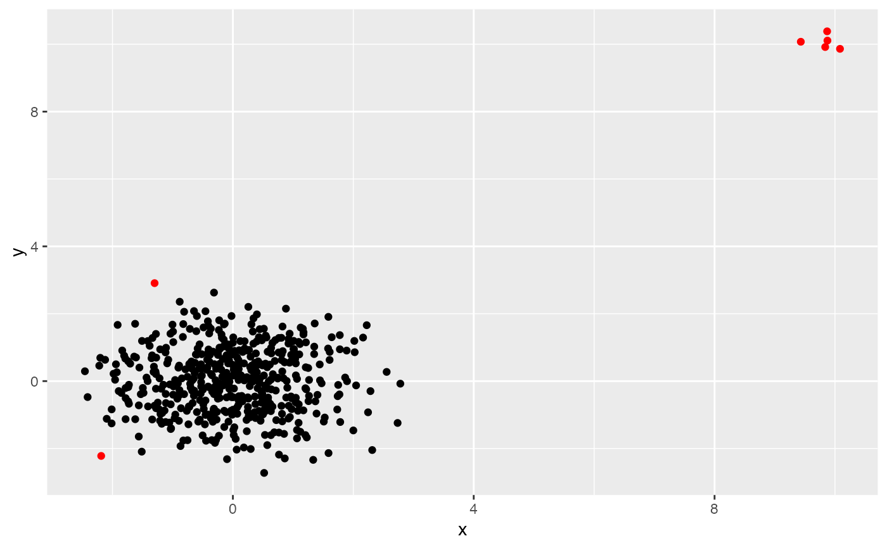

lookout.RdThis function identifies outliers using the algorithm lookout, an outlier detection method that uses leave-one-out kernel density estimates and generalized Pareto distributions to find outliers.
lookout(X, alpha = 0.05, unitize = TRUE, bw = NULL, gpd = NULL)The input data in a dataframe, matrix or tibble format.
The level of significance. Default is 0.05.
An option to normalize the data. Default is TRUE,
which normalizes each column to [0,1].
Bandwidth parameter. Default is NULL as the bandwidth is
found using Persistent Homology.
Generalized Pareto distribution parameters. If `NULL` (the default), these are estimated from the data.
A list with the following components:
outliersThe set of outliers.
outlier_probabilityThe GPD probability of the data.
outlier_scoresThe outlier scores of the data.
bandwidthThe bandwdith selected using persistent homology.
kdeThe kernel density estimate values.
lookdeThe leave-one-out kde values.
gpdThe fitted GPD parameters.
X <- rbind(
data.frame(x = rnorm(500),
y = rnorm(500)),
data.frame(x = rnorm(5, mean = 10, sd = 0.2),
y = rnorm(5, mean = 10, sd = 0.2))
)
lo <- lookout(X)
lo
#> Leave-out-out KDE outliers using lookout algorithm
#>
#> Call: lookout(X = X)
#>
#> Outliers Probability
#> 1 15 0.04826324
#> 2 291 0.04585693
#> 3 501 0.02193117
#> 4 502 0.02529435
#> 5 503 0.02575264
#> 6 504 0.02340327
#> 7 505 0.02300294
#>
autoplot(lo)
#> Warning: `guides(<scale> = FALSE)` is deprecated. Please use `guides(<scale> = "none")` instead.
